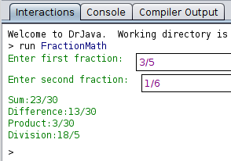

Write a Java class Fraction that represents a mathematical
fraction such as 1/2 or 3/5. The class should define the following:
numerator
denominator
add() — takes a single Fraction object
as a parameter and add it the Fraction object upon which
this method is called
multiply() — takes a single Fraction
object as a parameter and multiply it by the Fraction
object upon which this method is called
negate() — takes no parameters, just make the
Fraction object upon which this method is called negative
inverse() — takes no parameters, just invert the
Fraction object upon which this method is called, i.e.,
the numerator becomes the denominator and vice-versa
toString() — this method will return a
string representation of the Fraction object that it is
called on; this string should have the following format:<numerator> / <denominator>
add(), multiply(),
negate(), and inverse() methods, the return
type should be Fraction. What this means for these methods
is that they should not modify the Fraction objection on
which they were called; they should merely construct a new
Fraction object with the values calculated based on the
method functionality, and return a reference to it.
add() and multiply() methods should work
for fractions that do not have the same denominator.
Write a second Java class FractionMath that is the main class
for the program, i.e., it extends the ACM Program class. The
run() method for this class should do the following:
Fraction objects using numerators and
denominators input by the user. Each fraction input by the user will be
a single string, i.e., "3/5". It is up to you to parse
the string to find the numerator and the denominator, then create the
Fraction objects using the two parameter constructor. The
objects should be assigned to local reference variables
fraction1 and fraction2, respectively.
fraction1 and
fraction2
Example input/output:
Copy the folder LastName_FirstName_Asg3 containing Fraction.java and FractionMath.java into /usr/people/handins/CS160 before the due date.